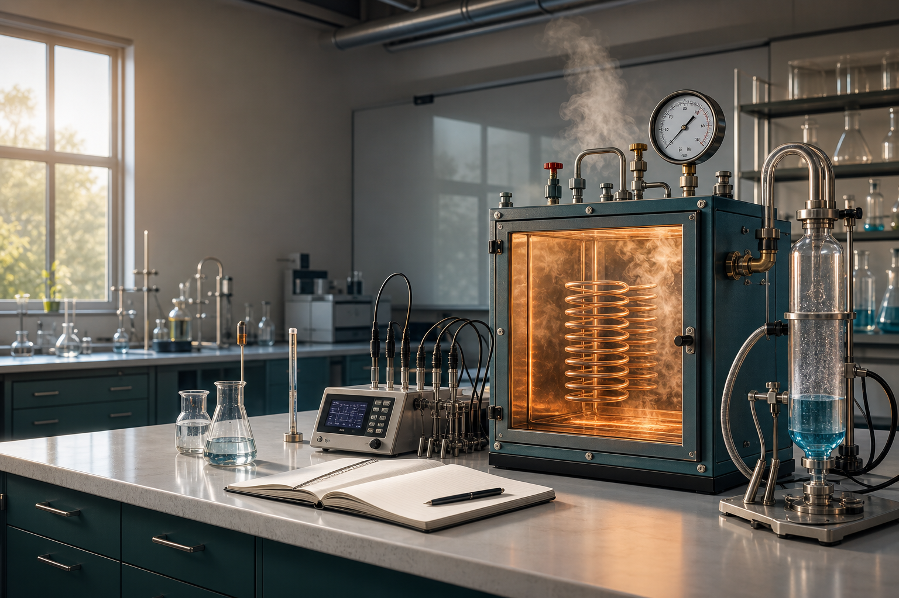

Temperatura
Mide que tan intensa es la agitacion promedio de las particulas. En los calculos del laboratorio se usa Kelvin.
0 °C = 273.15 K
Laboratorio virtual de fisica
Experimenta con temperatura, calor, trabajo, presion y energia interna como si estuvieras frente a un banco de pruebas.
Mapa del tema
Mide que tan intensa es la agitacion promedio de las particulas. En los calculos del laboratorio se usa Kelvin.
0 °C = 273.15 KEnergia que se transfiere por diferencia de temperatura. Si entra al sistema suele tomarse como positivo.
Q = m c DeltaTEnergia transferida cuando una fuerza desplaza algo. En gases aparece al expandirse o comprimirse.
W = P DeltaVEnergia microscopica almacenada en el sistema. Cambia cuando el sistema recibe calor o realiza trabajo.
DeltaU = Q - WEstacion 01
La ecuacion PV = nRT conecta el estado de un gas. Cambia los controles y observa como responde el sistema.
Estacion 02
El calor requerido depende de la masa, del material y del cambio de temperatura.
--
Estacion 03
Cada proceso mantiene una magnitud constante o bloquea cierta transferencia de energia.
--
Bitacora
Relaciona los conceptos con situaciones reales y registra una conclusion breve del experimento.